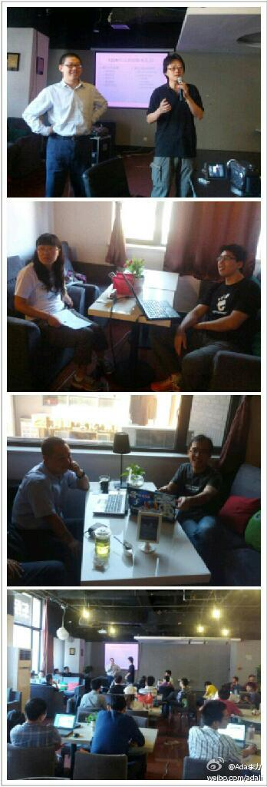
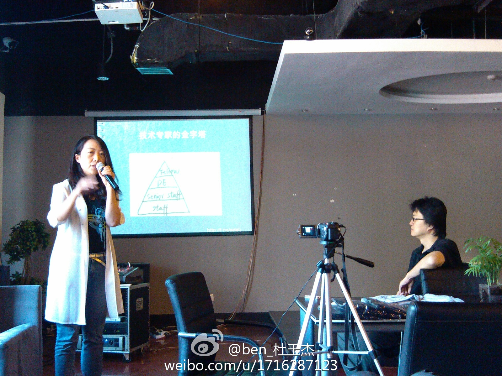

#SFD2012#@ZoomQueit 在讲社区怎么拉赞助。实际上在讲怎么去理解甲方的需求，这可是销售的基本思维。不过，国内技术社区还面临无接受捐款实体的问题。 我在#车库咖啡# 北京·车库咖啡 
必须参和。今天现场问了下多少人是通过CSDN网站知道这个活动，只有一个人举手。@ben_杜玉杰:#SFD2012#@Ada李力 重温自由软件日，回应@ZoomQuiet 质疑，@csdn 为啥掺和#自由软件日# 
兼职最重要的是避免和本职工作有利益冲突。程序员如果利用业余时间为其他公司开发软件，不使用公司资源，兼职开发的软件和本公司业务也不构成竞争关系。那还有什么理由反对呢? //@张祖良:IT人员兼职问题，大家怎么看呢？@Ada李力 @人月神话 @池建强@carollgan:一直想就些问题发起讨论，先试试这个问题。美国大多IT从业者同时做几份工作。比如一个工作全职，其他时间或周末或晚上再兼职帮其他公司做东西。但国内大部分公司签约时便规定不得在相关公司或岗位兼职。于是想发问，IT人员兼职利弊如何？可行性如何？@张祖良 @天堂龙2010 经验和粉丝都多，发表下高论？
#SFD2012#参加活动的好几个人都穿着自己参与的技术社区T恤衫。我喜欢的一件OpenSolaris的设计，就经常穿。这种T恤衫最怕设计成印满Logo, 穿上特像送快递的。 我在#车库咖啡# 北京·车库咖啡